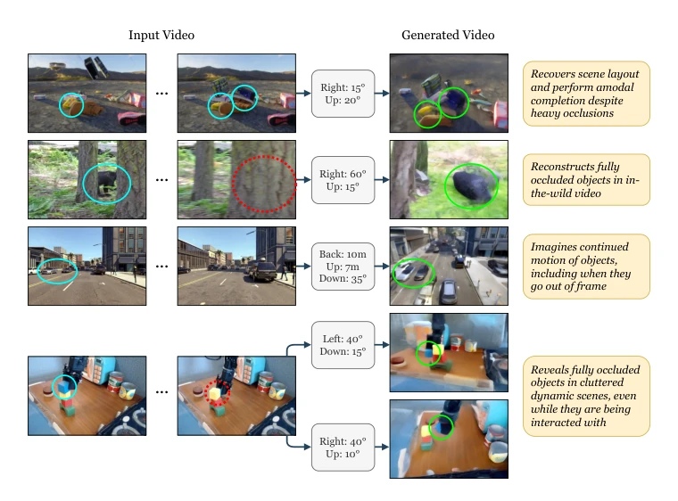
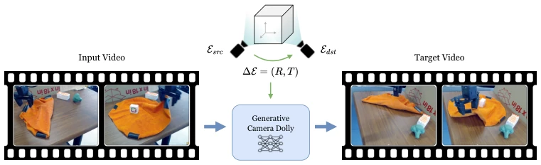
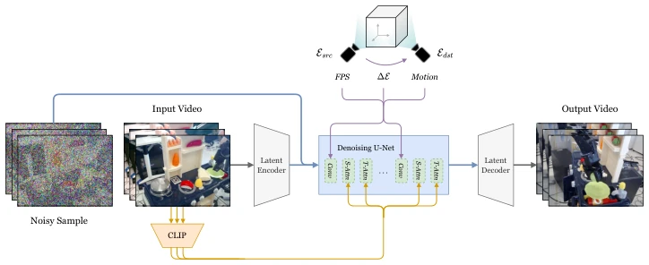
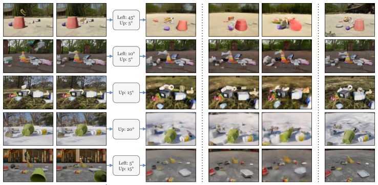
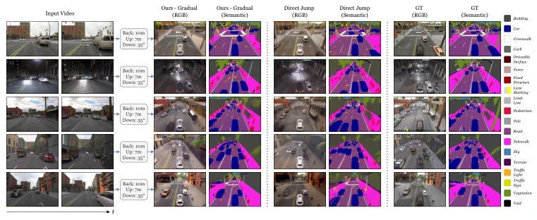
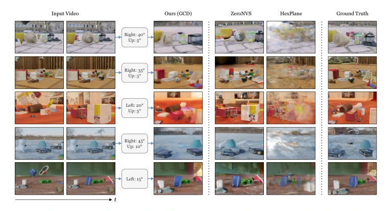
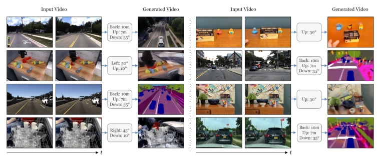
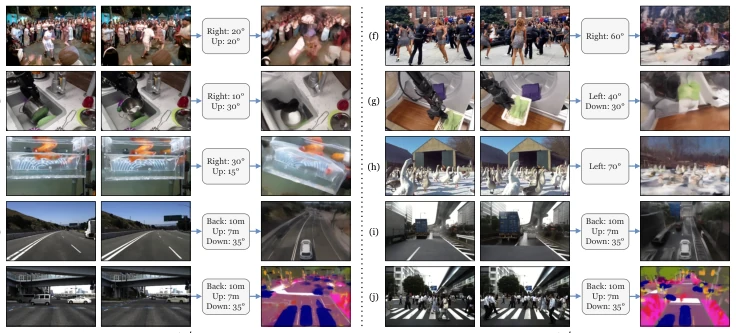

Generative Camera Dolly: Extreme Monocular Dynamic Novel View Synthesis
Basile Van Hoorick, Rundi Wu, Ege Ozguroglu, Kyle Sargent, Ruoshi Liu, P. Tokmakov abspdf
论文点评Review
这篇论文试图用“生成式”解决“重建式”的难题，把单目动态新视角合成变成了视频翻译任务。亮点在于利用 SVD 的强先验，实现了极端视角的变换，甚至能“脑补”遮挡物，这在纯视觉领域确实惊艳。但毒舌一点说，这本质上是基于概率的“幻觉”而非几何重建，遇到分布外数据（如复杂人体运动）容易崩。训练全靠合成数据，真实世界的物理一致性存疑。对于具身智能来说，这更像是一个“视觉特效工具”而非真正的“世界模型”，毕竟它不输出深度也不建模 3D 结构，只是让视频看起来像从新角度拍的。虽然零样本泛化效果惊人，但缺乏显式几何约束意味着它无法保证物理真实性，在需要精确感知的机器人任务中可能只是“看起来对”而已。
This paper attempts to solve the "reconstruction-based" dilemma using a "generative" approach, transforming monocular dynamic novel view synthesis into a video translation task. The highlight lies in leveraging the strong prior of SVD to achieve extreme view transformations, even "hallucinating" occluded objects, which is indeed stunning in the pure vision field. However, to put it bluntly, this is essentially probabilistic "hallucination" rather than geometric reconstruction, and it tends to collapse when encountering out-of-distribution data (such as complex human motion). Training relies entirely on synthetic data, raising doubts about physical consistency in the real world. For embodied intelligence, this is more like a "visual effects tool" rather than a true "world model", after all, it does not output depth nor model 3D structure, it just makes the video look like it was shot from a new angle. Although zero-shot generalization effects are amazing, the lack of explicit geometric constraints means it cannot guarantee physical authenticity, and in robot tasks requiring precise perception, it might just be "looking correct".
Monocular Dynamic Novel View Synthesis (DVS) is the "holy grail" in computer vision, but existing methods mostly rely on multi-view synchronized videos [38,47,73,78,83], limiting field applications. Even with monocular methods [17,33,71], they are usually limited to small view changes and cannot handle large-scale camera motion. Furthermore, these methods are mostly per-scene optimization [17,33,71], lacking cross-scene generalization ability, and difficult to infer occluded regions. For embodied intelligence and robot perception, we need the ability to generate videos from any view from a single video to enhance scene understanding. However, existing video generation models [5,7] lack fine-grained camera control and cannot be directly used for this task. This paper aims to utilize large-scale video diffusion priors to solve the problem of extreme monocular dynamic novel view synthesis.

Fig. 1: Spatial video translation of dynamic scenes. Given a single RGB video, we propose a method that is capable of imagining what that scene would look like from another viewpoint. Even for extreme camera transformations with large angles, our approach synthe- sizes videos with rich visual details that are consistent with the input, demonstrating advanced spatiotemporal reasoning capabilities.
The core framework is end-to-end video-to-video translation. The model is fine-tuned based on Stable Video Diffusion (SVD) [5], with inputs being source view video and relative camera extrinsic matrix ∆E. The innovation lies in embedding camera pose control into the diffusion process: rotation and translation matrices are decomposed and encoded via MLP, injected into U-Net feature layers as micro-conditioning. Regarding video conditioning, SVD's hybrid mechanism is retained, but the first frame is replaced with the entire input video sequence, enabling the model to learn temporal dynamics. Training data comes from synthetic simulation (Kubric-4D, ParallelDomain-4D), generating pseudo 4D data via back-projection. During inference, "progressive" or "direct" camera trajectories are supported, controlling generation quality by adjusting the guidance strength of diffusion steps. Overall, it does not explicitly model 3D geometry, but relies on diffusion priors to implicitly learn scene layout and motion patterns. Additionally, the model uses v-parameterization for preprocessing and uses the EDM sampler during the inference stage. This design allows the model to achieve video-to-video conversion without depth input, greatly simplifying the process, but also sacrificing explicit geometric interpretability.

Fig. 2: Method. Our model, GCD, is an end-to-end video translation pipeline that maps an input video from any viewpoint into an output video from any other perspective, with the objective of respecting all objects and dynamics occurring within the observed dynamic scene, and faithfully reconstructing the corresponding visual details from this novel viewpoint. The relative camera extrinsics matrix ∆E guides the relationship between the two camera poses.

Fig. 10: Network architecture. Our model performs diffusion in latent space [35,52]. The input video is encoded by a KL-VAE, and then channel-concatenated with the noisy sample. At training time, the output video is estimated and supervised; at inference time, multiple denoising steps are performed. In both cases, per-frame CLIP embeddings condition the U- Net by means of cross-attention, and and other relevant pieces of information (frame rate, desired camera pose transformation, and motion value) condition the U-Net by adding their embeddings onto the feature vectors in-between convolutions.
Tested on two synthetic datasets, Kubric-4D and ParallelDomain-4D, with metrics including PSNR, SSIM, LPIPS, and semantic mIoU. Baselines compared optimization methods such as HexPlane [10], 4D-GS [78], DynIBaR [33], as well as Vanilla SVD [5] and ZeroNVS [54]. GCD significantly outperforms baselines in both visible and occluded regions, e.g., PSNR reaches 25.04 on ParallelDomain. Ablation studies show "progressive" camera trajectories outperform "direct" jumps, and fine-tuning SVD outperforms training from scratch. Zero-shot generalization ability is demonstrated on real-world videos (such as driving, robot manipulation), capable of handling severe occlusion. But failure cases show insufficient reconstruction ability for out-of-distribution data (such as deforming objects), and training relies entirely on synthetic data, limiting its reliability in complex physical scenes.

Fig. 3: Qualitative ablation study results for Kubric-4D. We show inputs, predictions, ablations, and ground truths. The input and output videos both consist of T = 14 frames, but we show the first and last frame of the input video for conciseness, and only the last frame of the output and target. Whereas the ablations tend to look blurry with incorrect shape and/or appearance characteristics (especially for moving objects), our main model (gradual, max 90°, finetuned) faithfully reconstructs the scene layout and dynamics from the input video. In addition, it often hallucinates plausible backgrounds in unseen regions.

Fig. 4: Qualitative ablation study results for ParallelDomain-4D. We show inputs, predictions, ablations, and ground truths for both visual and semantic scene completion. Our model excels at recovering the top-down viewpoint with high accuracy in both modalities, despite the heavy occlusion patterns that often occur in driving scenes. While the direct model performs almost as well as the gradual one, it tends to introduce slightly more hallucination and discoloration of objects.

Fig. 5: Qualitative baseline comparison results for Kubric-4D. We show inputs, pre- dictions, baselines, and ground truths. Compared to baselines, our results depict the scene layout and dynamics under the desired novel viewpoints with reasonable accuracy overall and much fewer flickering artefacts.

Fig. 6: Qualitative real-world generalization results. We show inputs and predictions on BridgeData V2 [69], TCOW Rubric [67], TRI-DDAD [22], and Berkeley DeepDrive [85]. Despite being trained on synthetic data alone, our approach show surprisingly strong gener- alization skills to a variety of real-world scenarios. For example, on the top right, where a full occlusion occurs around the middle of the video, our model faithfully predicts both the posi- tion and appearance of the invisible duck at the last frame, demonstrating object permanence capabilities.

Fig. 11: Failure cases. We show inputs and predictions of real-world examples. Since de- formable objects are not present in our Kubric-4D finetuning set, our model occasionally struggles with reconstructing their shape, appearance, and motion correctly. This can some- times lead to objects becoming vague or blending in with each other. Similarly, videos in the bottom two rows are possibly related to them bordering on being out-of-distribution with respect to ParallelDomain-4D.